Установить дистрибутив Kali Linux в виртуальную машину.
Ход лабораторной работы
Создание виртуальной машины
№1
Устанавливаем виртуальную машину по инструкции, как в лабораторной
работе №1.
(рис. [-@fig:001])
- (рис. [-@fig:004])
{#fig:001
width=70% }
Жесткий диск
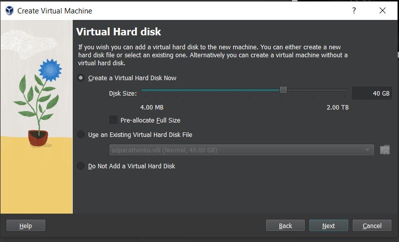
Виртуальный жесткий дискПараметры машины
№2
Подключаем образ Kali Linux.
(рис. [-@fig:005])
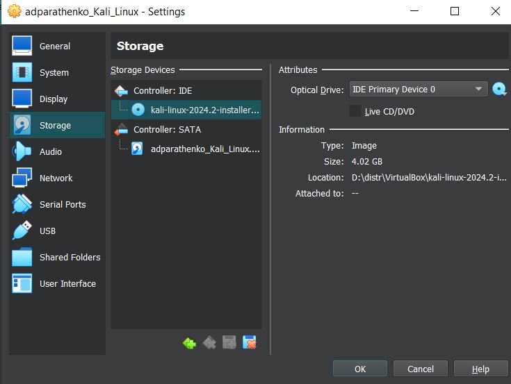
Образ диска
№3
Устанавливаем Kali Linux.
(рис. [-@fig:006])
Установка Kali Linux
№4
Настройки установки.
(рис. [-@fig:007])
- (рис. [-@fig:023])
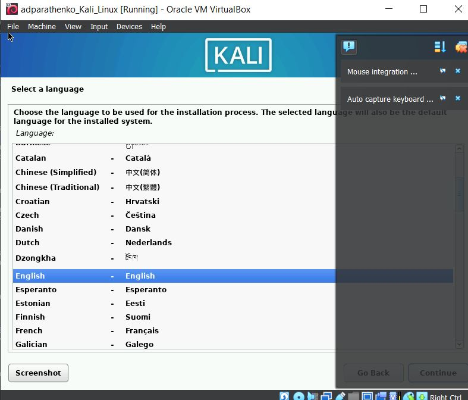
Язык
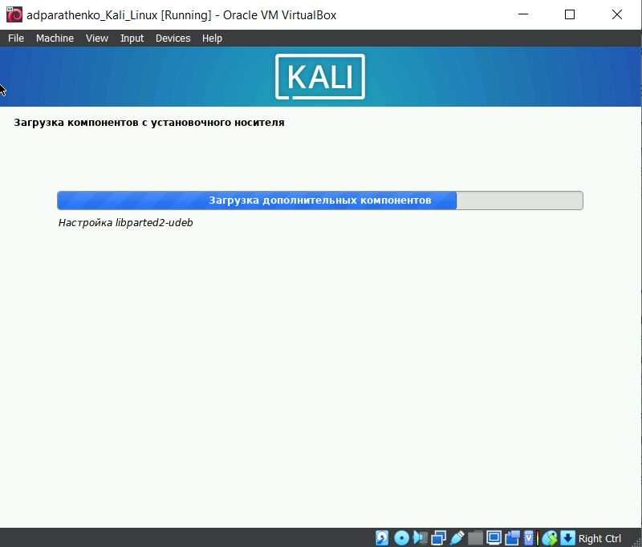
Загрузка компонентов
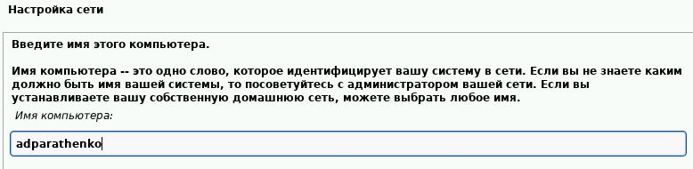
Настройка сети
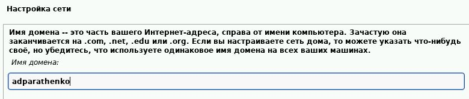
Настройка сети, доменУчётная запись
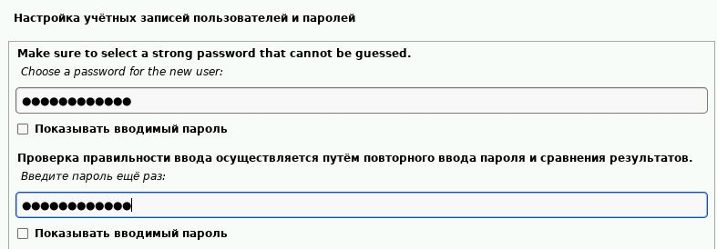
Учётная запись
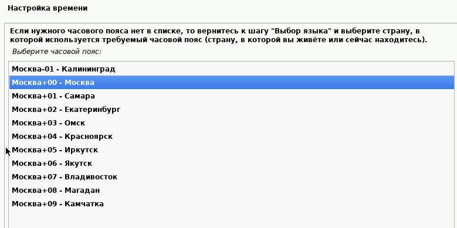
Время
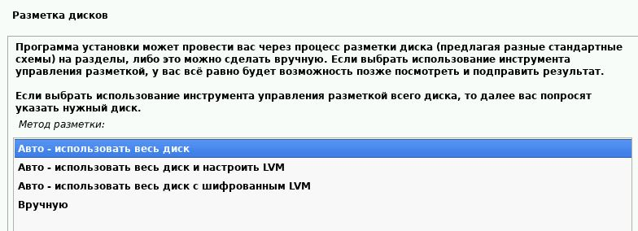
ДискДискДискДиск
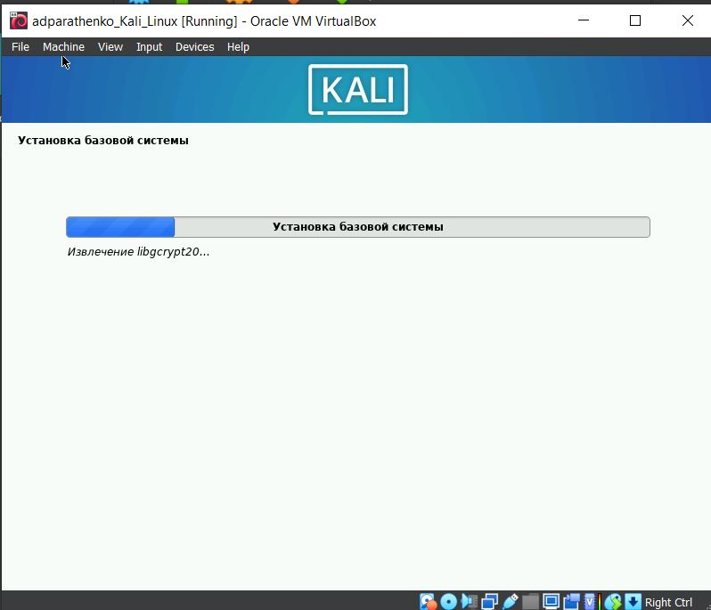
УстановкаПрограммное обеспечениеНастройка менеджера дисплеев
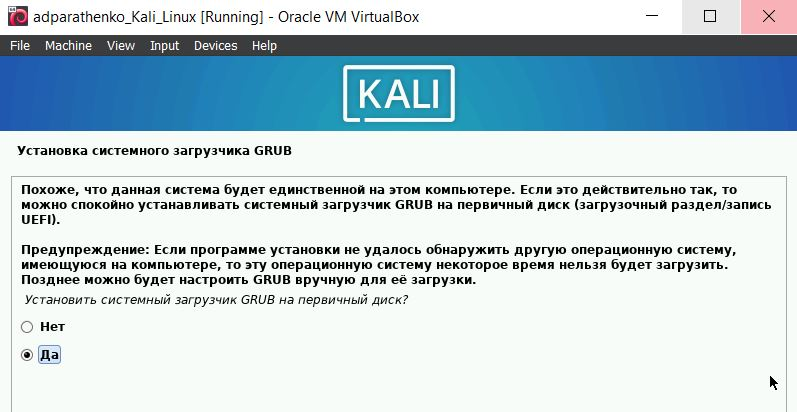
Установка системного
загрузчика
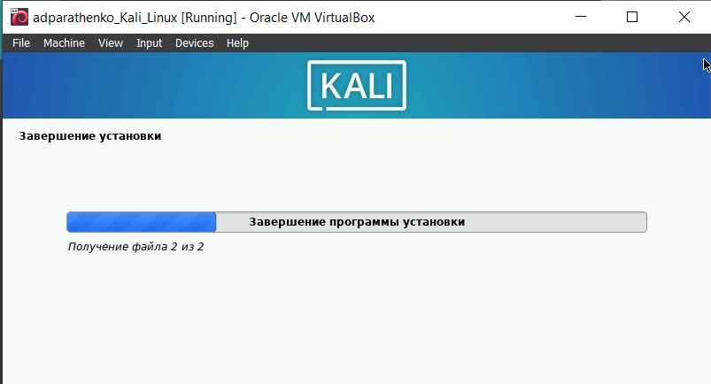
УстановкиЗавершение установки
№5
Вход в учётную запись.
(рис. [-@fig:024])
- (рис. [-@fig:025])
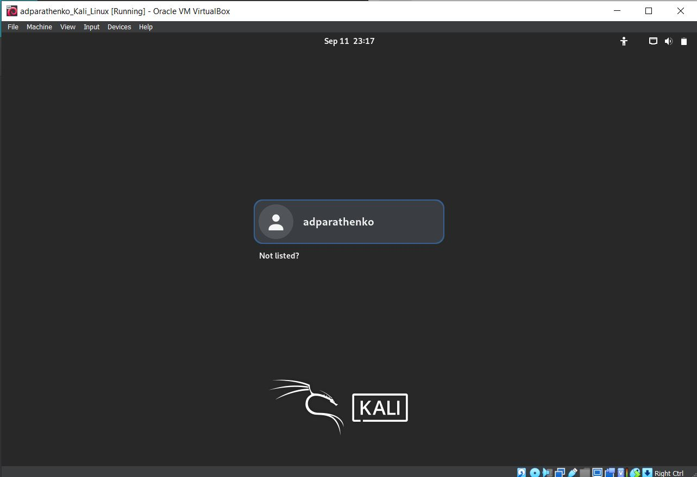
ПользовательУстановка гостевых
дополнений
№6
Перезагружаем виртуальную машину.
(рис. [-@fig:026])
Рабочий стол
Вывод
Установили вертуальную машину с дистрибутивом Kali Linux.
Литература
Парасрам, Ш. Kali Linux: Тестирование на проникновение и
безопасность : Для профессионалов. Kali Linux / Ш. Парасрам, А. Замм, Т.
Хериянто, и др. – Санкт-Петербург : Питер, 2022. – 448 сс.
 {#fig:001
width=70% }
{#fig:001
width=70% }